从发动机到轮胎 细数动力经过的齿轮
讲过了几篇发动机的文章，也讲到了我们的目的是要把燃料中的化学能转化成动能。而没有传动机构的介入，发动机创造出来的动能就无法输出，也注定转化成内能，以热量的形式散发到空气中。是时候该把动力输出到轮胎了！
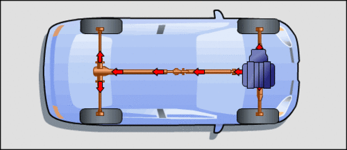在机械领域里，齿轮机构是不可或缺的部分。这在要求较大功率输出，且要求高效率高速度的汽车上，齿轮的精度和强度，以及平顺性耐用性都有很高的要求，今天我们就来看一下，动力，在发动机与轮胎之间都经过了哪些齿轮转换。
变速箱里，动力在悄悄的变化
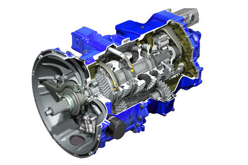在发动机提供了充沛的动力之后，却也伴随着与车轮之间的速度匹配问题。我们知道，一般发动机转速为每分钟700-5000转，高低比率约为7倍，而正常行车速度为5-120Km/h（超速什么的最讨厌了），比率为24倍，这就要求有一套变速机构将动力优化，从而合理使用动力资源。而变速器的核心部件，就是一系列齿轮。
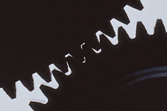 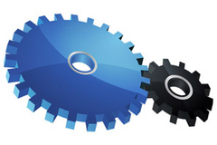这种啮合方式的齿轮用在汽车传动机构上是很不负责任的
汽车上的齿轮可不是简单的三角锯齿啮合在一起，传输动力，那是玩具车上用的，也不能设计成上图方形的轮齿，否则会有极大的磨损和动力的损耗。我们可以想象，一个齿廓为平面的齿轮在啮合时，相当于我们穿一双很硬的平底鞋，走路时着地的过程为“后鞋跟”——“全鞋底”——“前鞋尖”，一段时间会发现鞋底前后磨损很大。而带来的冲击……想想木屐的感觉，就清楚了。
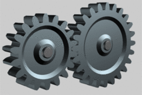 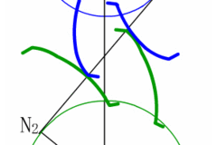渐开线圆柱齿轮啮合效果，近似滚动传递过程。蓝色和绿色线条的曲线部分为渐开线造型共轭齿廓
在大负荷的机械上，齿轮的边线——齿廓会设计成圆弧或渐开线或更复杂的曲线造型，以减轻啮合时的摩擦造成的“根切”和“削尖”。圆弧齿轮在啮合时，齿廓还是有一定滑动摩擦的，而渐开线齿轮则极大减小滑动，以接近混动的方式传播扭矩。这就像荷兰木鞋，虽然一样是硬底，但因为鞋底是圆润的，就不会想木屐一样“啪嗒啪嗒”的，只有“咚”的一声。冲击和磨损自然也减轻了。当然，这样方式的传动仍然是有一定冲击的，我们是否可以避免这“咚”的一声呢？肯定可以。
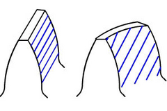 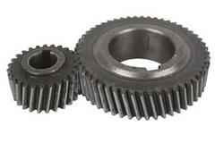我们经常见到左图这种斜齿齿轮的设计，它的啮合情况是右图右侧这样的：首先啮合的是最先结合的一点，然后随着齿轮的转动，这条点延长成一条线，并向轮齿的一边移动，当转到一定程度后，结合线啮处，从一条线又缩短成一点，直至啮出。这就让啮合的过程变得柔和了许多，而且可以多齿同时啮合，力矩的传播也接近线性，这就如同我们穿了一双软底的运动鞋，冲击和噪声都明显减弱了。而右图左侧为直齿齿轮啮合情况，从一开始就完全结合形成等于齿宽的啮合线，力量传播直接，震动和噪声也就明显了。
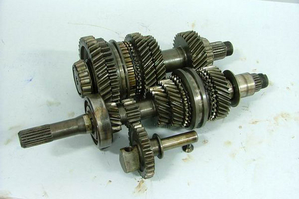老式奥迪100车型手动变速器，倒档时，会将下方倒档轴上的齿轮卡在输入输出轴上直齿齿轮中间
我们可以直观感受到这种差异吗？当然。细心的朋友会发现，有些手动挡车型在倒车时会有“嗡嗡”的声音，这个声音就是因为变速箱中倒档使用了直齿齿轮的缘故。由于倒档平时较少使用且通常在车辆静止状态下使用，所以为了节省空间和成本，倒档齿轮不单独配备一组常啮合齿轮，而把其中一个齿轮结合在同步器上，在切入倒档时，用一个单独的惰轮连接该同步器与另一轴上的齿轮，并且因为增加了这个惰轮因而改变了输出轴的旋转方向。前进挡理所当然的用了斜齿齿轮，而因为斜齿齿轮交错轮齿的造型，使得惰轮无法顺利结合，所以这种方案下的倒档也就退而求之，采用了直齿齿轮。
尺有所短、寸有所长：
虽然直齿齿轮的平顺性差，但是也因为以一条齿宽的啮合线瞬时啮合，动力传播更为直接，适宜赛车改装。而且直齿齿轮允许在一定范围的转速差之内将分开的两个齿轮结合，序列变速器更是运用了这个特点设计，在争分夺秒的赛车之上也是普遍应用，而斜齿齿轮因为啮合之初为一点，容易损伤齿轮，必须使用同步器来将转速差降至很时才能完成换挡，不及直齿来的快。
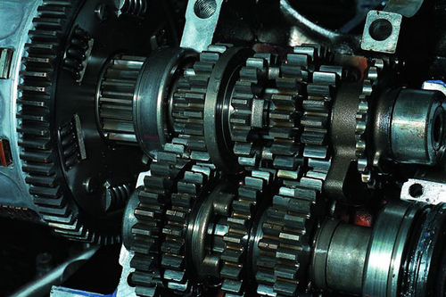竞技赛车常用的“直牙波箱”
而且斜齿齿轮因为这种倾斜的齿牙，在运转时势必会产生一个轴向力，在重负荷时对轴承和箱体有一定的损害，所以产生了一种新式的斜齿齿轮——人字齿轮。这种设计明显改善了这种情况。著名的雪铁龙标志，即是由人字齿轮演化而成。1905年安德烈•雪铁龙创办了自己的第一家公司——人字齿轮生产公司，而有小道传言说人字齿轮也是雪铁龙的一个远房亲属发明的。
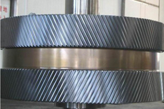 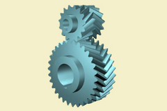不过人字齿轮因对机件加工要求很高，所以在通常情况下，人字齿轮可以演化成这种由相对的两个斜齿齿轮组成的“八”字齿轮，其工作特性与人字齿轮无异。
2细数动力经过的齿轮(二)
行星齿轮
我们再来看看自动变速器。与手动变速器不同，自动变速器采用了行星齿轮组代了替手动变速器上的齿轮副。这种齿轮组虽然很早就发明了，但对不了解其工作原理的人，看起来还是很神奇的。
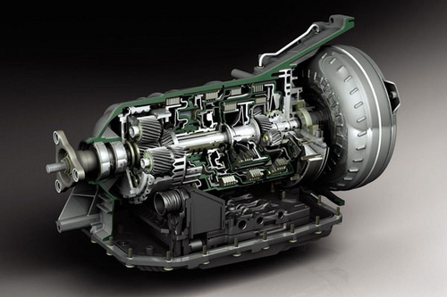图中能看到的斜齿齿轮即为一系列行星齿轮，而那些一片片层叠的东西，是控制行星齿轮的离合器
动力最终的归宿
当动力经过变速器输出之后，就要到达轮胎了，不过此时输出的扭矩还不够，转速还是太高，还要经过一副“最终减速比齿轮”来转换，这副齿轮就是我们通常说的“尾牙”。
如果是横置发动机前轮驱动的车辆还好说，直接把变速箱的动力通过一副普通的齿轮传递就可以了，如果是纵置发动机就要另辟蹊径了，因为此时动力传播的方向由横直发动机的平行，变成了垂直，此时尾牙不仅要增加扭矩，还要旋转扭矩前进的方向。
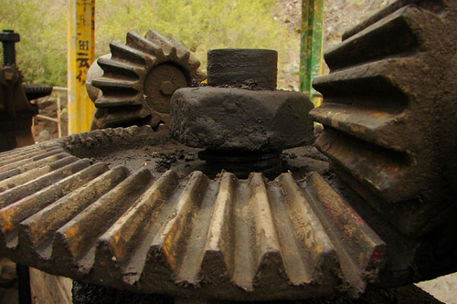转换动力传播的方向，难度不大，用这种锥齿轮就可以了。不过图片上这种锥齿轮相当于圆锥齿轮上的直齿齿轮，也一样有着直齿齿轮的缺点，所以不适合在汽车上使用。有人说，把轮齿做成斜齿不就可以了吗？不成！
斜齿锥齿轮因为斜齿方式的设计，其轴线并不相交，这在啮合过程中有一股旋转的力和小齿轮较劲，这对机件非常不利，所以斜齿锥齿轮很少出现。
用在汽车上上的锥齿轮为曲线齿轮，因其曲线不同而分为：准双曲锥齿轮、外摆线锥齿轮及渐开线锥齿轮（与上文渐开线齿轮不同，上文渐开线齿轮指的是齿廓曲线为渐开线，本处为齿线/齿顶线条为渐开线），而因为其造型相似，在国内经常将其统称为双曲线齿轮。
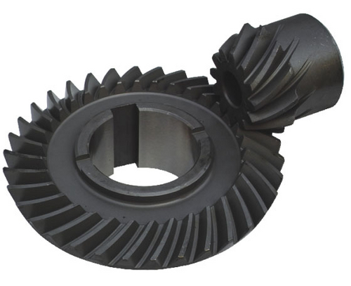这种齿轮最大特点为在啮合过程中，两个齿轮的轮齿之间会有很大的径向滑动，对润滑油的要求也非常高。当然，最重要的特点是改变了传动的角度，给纵置发动机以及后轮驱动方式提供了便利，但也因此消耗一部分动力，并让汽车的结构更复杂。这就是目前很多轿车使用前驱设计的原因了。
如果说发动机的变革是由一个个巧思及电气元件的协同来促进的，那么代表着齿轮技术的变速器则是凭着严谨的工艺一步步的发展。全世界的发动机一年可以评出个十佳，而知名变速器的生产商就那么几家。确实，比较两者机械加工的难度，变速器要比发动机高出很多。